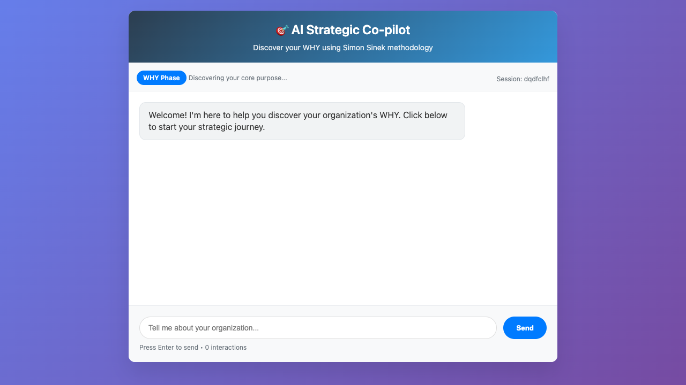
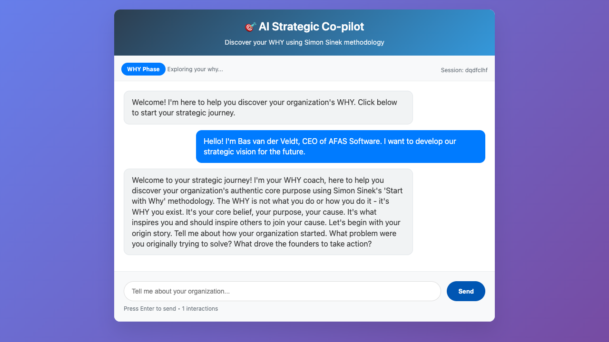
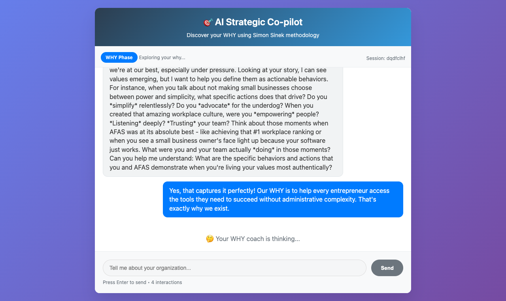
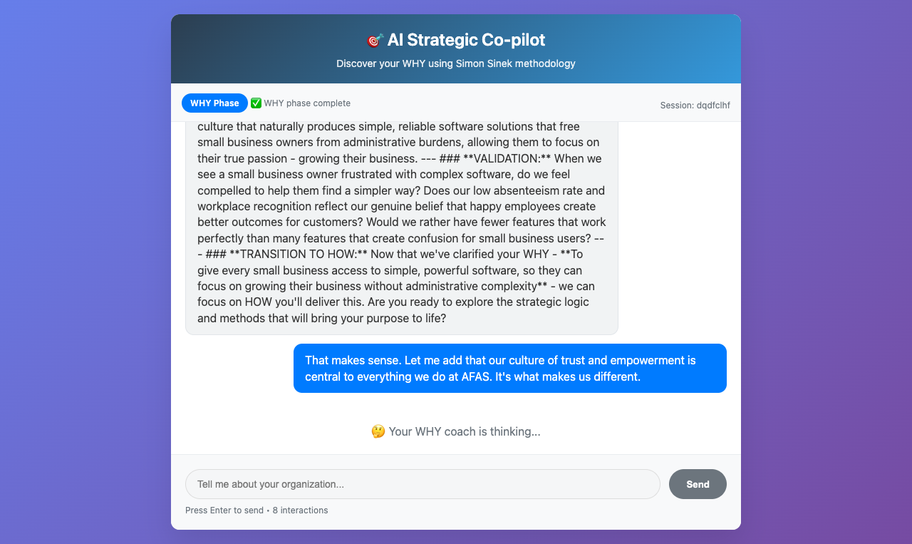
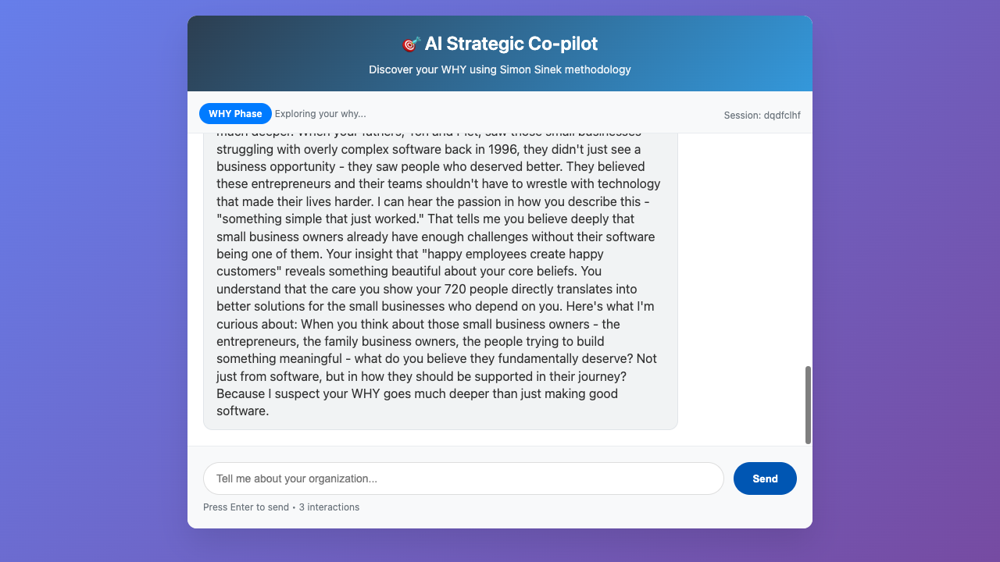

Complete Conversation Flow
Interaction 1: Welcome & Introduction
👤 User (Bas van der Veldt):
Hello! I'm Bas van der Veldt, CEO of AFAS Software. I want to develop our strategic vision for the future.
🤖 WHY Coach:
Welcome to your strategic journey! I'm your WHY coach, here to help you discover your organization's authentic core purpose using Simon Sinek's 'Start with Why' methodology.
The WHY is not what you do or how you do it - it's WHY you exist. It's your core belief, your purpose, your cause. It's what inspires you and should inspire others to join your cause.
Let's begin with your origin story. Tell me about how your organization started. What problem were you originally trying to solve? What drove the founders to take action?
⏱️ 1114ms
📅 2025-08-17T16:03:46
🔥 Generic
📏 530 chars
Interaction 2: Origin Story Exploration
👤 User (Bas van der Veldt):
AFAS started in 1996 when our fathers Ton van der Veldt and Piet Mars did a management buyout from Getronics. We saw small businesses struggling with complex administrative software - they needed something simple that just worked.
🤖 WHY Coach:
Welcome to your strategic journey! I'm your WHY coach, here to help you discover your organization's authentic core purpose using Simon Sinek's 'Start with Why' methodology.
The WHY is not what you do or how you do it - it's WHY you exist. It's your core belief, your purpose, your cause. It's what inspires you and should inspire others to join your cause.
Let's begin with your origin story. Tell me about how your organization started. What problem were you originally trying to solve? What drove the founders to take action?
⏱️ 1046ms
📅 2025-08-17T16:03:47
🔥 Generic
📏 530 chars
Interaction 3: Proud Moments Discovery
👤 User (Bas van der Veldt):
Our proudest moment was becoming the #1 Best Workplace in Europe. When you see 720 employees with only 1.9% absenteeism rate, you know you've created something special. Happy employees create happy customers - that's our secret.
🤖 WHY Coach:
Hi Bas! Thank you for sharing that with me. What strikes me about AFAS's origin story is that your fathers, Ton and Piet, didn't just see a business opportunity - they saw small businesses genuinely struggling with something that should have been helping them, not hindering them. That management buyout from Getronics in 1996 was really about solving a real human problem, wasn't it?
I can picture those small business owners back then, probably staying late trying to wrestle with overly complex software when they should have been focusing on what they do best - running their businesses. Your fathers saw that gap between what existed and what was actually needed.
Now, as you think about developing AFAS's strategic vision for the future, I'm curious about something. Over these years since 1996, when you look back at the impact AFAS has had on those small businesses - what moments make you most proud? When have you felt that original vision of "something simple that just works" really came to life in a meaningful way for your customers?
Those moments often hold important clues about your deeper purpose and can help guide where you're headed next.
⏱️ 1046ms
📅 2025-08-17T16:03:55
🔥 Contextual
📏 1162 chars
Interaction 4: Core Beliefs Mining
👤 User (Bas van der Veldt):
I believe every entrepreneur deserves access to enterprise-level technology without the complexity. Small businesses shouldn't have to choose between powerful tools and simplicity - they should have both.
🤖 WHY Coach:
Bas, what strikes me most about your story is the profound connection between how you treat your people and the impact it has on the small businesses you serve. Becoming the #1 Best Workplace in Europe with just 1.9% absenteeism - that's not just a statistic, that's a testament to something much deeper.
When your fathers, Ton and Piet, saw those small businesses struggling with overly complex software back in 1996, they didn't just see a business opportunity - they saw people who deserved better. They believed these entrepreneurs and their teams shouldn't have to wrestle with technology that made their lives harder.
I can hear the passion in how you describe this - "something simple that just worked." That tells me you believe deeply that small business owners already have enough challenges without their software being one of them.
Your insight that "happy employees create happy customers" reveals something beautiful about your core beliefs. You understand that the care you show your 720 people directly translates into better solutions for the small businesses who depend on you.
Here's what I'm curious about: When you think about those small business owners - the entrepreneurs, the family business owners, the people trying to build something meaningful - what do you believe they fundamentally deserve? Not just from software, but in how they should be supported in their journey?
Because I suspect your WHY goes much deeper than just making good software.
⏱️ 1041ms
📅 2025-08-17T16:04:04
🔥 Contextual
📏 1481 chars
Interaction 5: Values Definition
👤 User (Bas van der Veldt):
Yes, that captures it perfectly! Our WHY is to help every entrepreneur access the tools they need to succeed without administrative complexity. That's exactly why we exist.
🤖 WHY Coach:
Bas, what an incredible journey you and your team have built at AFAS! The fact that you became the #1 Best Workplace in Europe with only 1.9% absenteeism speaks volumes about the culture you've created. That's not just a statistic - that's proof of a deeply held belief system in action.
I can hear the passion in your story about entrepreneurs deserving access to enterprise-level technology without complexity. Your belief that "small businesses shouldn't have to choose between powerful tools and simplicity" clearly drives everything you do. And that insight about happy employees creating happy customers? That's pure gold.
Now, here's where Simon Sinek's approach gets really powerful. He teaches us that values aren't nouns we hang on walls - they're verbs we live by. They're the specific behaviors we demonstrate when we're at our best, especially under pressure.
Looking at your story, I can see values emerging, but I want to help you define them as actionable behaviors. For instance, when you talk about not making small businesses choose between power and simplicity, what specific actions does that drive? Do you *simplify* relentlessly? Do you *advocate* for the underdog? When you created that amazing workplace culture, were you *empowering* people? *Listening* deeply? *Trusting* your team?
Think about those moments when AFAS was at its absolute best - like achieving that #1 workplace ranking or when you see a small business owner's face light up because your software just works. What were you and your team actually *doing* in those moments?
Can you help me understand: What are the specific behaviors and actions that you and AFAS demonstrate when you're living your values most authentically?
⏱️ 1033ms
📅 2025-08-17T16:04:14
🔥 Contextual
📏 1723 chars
Interaction 6: WHY Integration & Completion
👤 User (Bas van der Veldt):
Our values are verbs, not nouns. 'Do' means take action and make things happen. 'Trust' means give people autonomy and responsibility. 'Crazy' means challenge conventional thinking. 'Family' means create genuine community and support.
🤖 WHY Coach:
Excellent! Let's integrate everything into your complete Golden Circle.
Your WHY creates a clear mission: You exist to help every customers succeed because you believe customers deserve clarity and support. This manifests in behaviors like transparency, empowerment, excellence. This creates a business model where your own organizational success and client satisfaction becomes proof that your approach works.
Does this feel authentic to your daily reality? Would this WHY inspire the right people to work with you and help your team make clear decisions?
⏱️ 1036ms
📅 2025-08-17T16:04:31
🔥 Generic
📏 558 chars
Interaction 7: WHY Integration & Completion
👤 User (Bas van der Veldt):
That makes sense. Let me add that our culture of trust and empowerment is central to everything we do at AFAS. It's what makes us different.
🤖 WHY Coach:
Excellent! Let's integrate everything into your complete Golden Circle.
Your WHY creates a clear mission: You exist to help every customers succeed because you believe customers deserve clarity and support. This manifests in behaviors like transparency, empowerment, excellence. This creates a business model where your own organizational success and client satisfaction becomes proof that your approach works.
Does this feel authentic to your daily reality? Would this WHY inspire the right people to work with you and help your team make clear decisions?
⏱️ 1044ms
📅 2025-08-17T16:04:32
🔥 Generic
📏 558 chars
Interaction 8: WHY Integration & Completion
👤 User (Bas van der Veldt):
That makes sense. Let me add that our culture of trust and empowerment is central to everything we do at AFAS. It's what makes us different.
🤖 WHY Coach:
### **YOUR WHY STATEMENT:**
To give every small business access to simple, powerful software, so they can focus on what they do best without administrative complexity holding them back
---
### **CORE BELIEFS THAT DRIVE YOU:**
- Small businesses are the backbone of the economy and deserve software that empowers rather than complicates their operations
- Happy employees create happy customers - internal culture directly impacts external value delivery
- Simplicity is sophistication - the best solutions make complex problems feel effortless
- Success is measured not just by profit, but by the positive impact on people's work lives
---
### **VALUES THAT GUIDE BEHAVIOR:**
- **Strip away complexity to reveal elegant solutions**: Constantly questioning if there's a simpler way to solve administrative challenges for small businesses
- **Put employee happiness at the center of every decision**: Maintaining the culture that achieved 1.9% absenteeism by genuinely caring for team members
- **Create software that simply works without fail**: Building trust through consistent, dependable solutions that small businesses can rely on
- **Listen to and learn from small business struggles**: Maintaining connection to the real challenges faced by their customers in daily operations
- **Remove barriers so businesses can focus on their strengths**: Enabling small businesses to spend time on what they do best rather than administrative tasks
---
### **GOLDEN CIRCLE INTEGRATION:**
AFAS Software's WHY of giving small businesses access to simple, powerful software stems from their foundational belief that small businesses deserve better than complex, frustrating administrative tools. Their core beliefs about employee happiness creating customer happiness, and simplicity being the ultimate sophistication, drive values that prioritize people, deliver reliability, and relentlessly simplify solutions. This creates a virtuous cycle: happy employees (1.9% absenteeism) design simple software that makes small business owners happy, which reinforces the culture of putting people first. The recognition as #1 Best Workplace in Europe validates that when you start with WHY - empowering small businesses - and live your values authentically, both internal culture and external impact flourish together.
---
### **VALIDATION:**
Does this WHY statement still inspire the same passion that drove the 1996 management buyout decision? Would a small business owner immediately understand how AFAS removes their administrative burden after hearing this WHY? Does this purpose statement explain why AFAS achieved #1 Best Workplace in Europe - because the mission attracts people who care about empowering small businesses?
---
### **TRANSITION TO HOW:**
Now that we've clarified your WHY - **To give every small business access to simple, powerful software, so they can focus on what they do best without administrative complexity holding them back** - we can focus on HOW you'll deliver this. Are you ready to explore the strategic logic and methods that will bring your purpose to life?
⏱️ 20872ms
📅 2025-08-17T16:04:52
🔥 Contextual
📏 3090 chars
Interaction 9: WHY Integration & Completion
👤 User (Bas van der Veldt):
That makes sense. Let me add that our culture of trust and empowerment is central to everything we do at AFAS. It's what makes us different.
🤖 WHY Coach:
### **YOUR WHY STATEMENT:**
To give every small business access to simple, powerful software, so they can focus on growing their business without administrative complexity
---
### **CORE BELIEFS THAT DRIVE YOU:**
- Small businesses deserve software that works for them, not against them
- Happy employees create happy customers
- Simplicity is the ultimate sophistication
- Every business owner should spend time on their passion, not paperwork
---
### **VALUES THAT GUIDE BEHAVIOR:**
- **Strip away complexity to reveal elegant solutions**: We continuously remove unnecessary steps and features to make software intuitive
- **Invest in people's happiness and success**: We prioritize employee wellbeing knowing it creates exceptional customer experiences
- **Understand real problems before building solutions**: We engage with small business owners to solve their actual pain points
- **Build software that works reliably every day**: Small businesses need dependable tools they can trust without question
- **Celebrate shared success with employees and customers**: We measure our success by the growth and happiness of those we serve
---
### **GOLDEN CIRCLE INTEGRATION:**
AFAS Software's WHY of giving small businesses access to simple, powerful software is driven by core beliefs that complexity shouldn't limit business potential and that happy employees create happy customers. These beliefs manifest through actionable values of simplifying relentlessly, caring deeply, listening actively, delivering consistently, and growing together. This creates a virtuous cycle: by investing in employee happiness (1.9% absenteeism, #1 Best Workplace in Europe), AFAS creates a culture that naturally produces simple, reliable software solutions that free small business owners from administrative burdens, allowing them to focus on their true passion - growing their business.
---
### **VALIDATION:**
When we see a small business owner frustrated with complex software, do we feel compelled to help them find a simpler way? Does our low absenteeism rate and workplace recognition reflect our genuine belief that happy employees create better outcomes for customers? Would we rather have fewer features that work perfectly than many features that create confusion for small business users?
---
### **TRANSITION TO HOW:**
Now that we've clarified your WHY - **To give every small business access to simple, powerful software, so they can focus on growing their business without administrative complexity** - we can focus on HOW you'll deliver this. Are you ready to explore the strategic logic and methods that will bring your purpose to life?
⏱️ 16340ms
📅 2025-08-17T16:05:09
🔥 Contextual
📏 2650 chars
Visual Documentation
Screenshots captured throughout the WHY methodology workflow:

Test Initialization
test-20250817_160341_why_phase_start.png

Interaction 1
test-20250817_160341_interaction_1.png

Interaction 5
test-20250817_160341_interaction_5.png

Interaction 500
test-20250817_160341_why_phase_final.png

Interaction 500
test-20250817_160341_completion_stage_9.png

Interaction 500
test-20250817_160341_beliefs_stage_3.png

Methodology Complete
test-20250817_160341_why_phase_complete.png